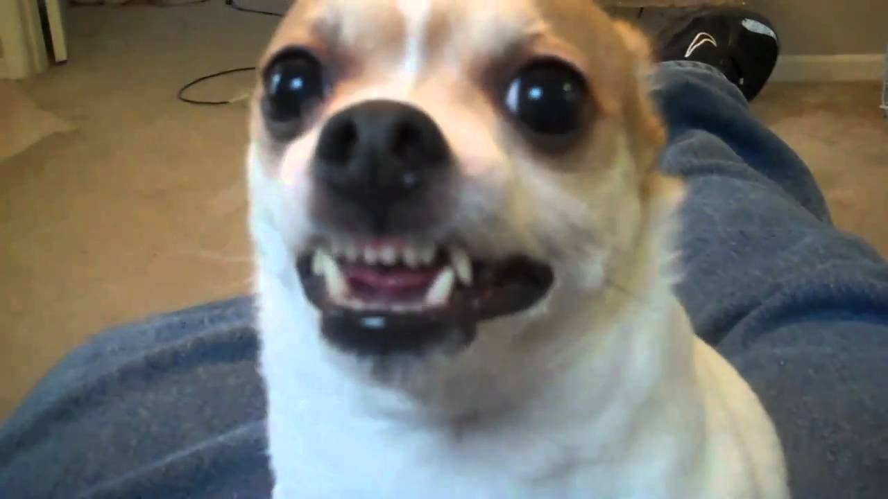

Are dogs evil? In order for a living being to be evil, they would need an intent to do a morally wrong thing. Dogs haven’t the moral capacity to make those kinds of decisions or to have that kind of intent. So, no dogs aren’t evil. They can’t be evil. Dogs can only do what their species programs them to do: to act like dogs. What we might think right or wrong has nothing to do with how a dog thinks or perceives the world. We often apply human laws to animal behavior, and that is illogical and wrong. We sometimes put dogs to death for things that are perfectly normal in the animal world. For example, if a person commands their dog to attack an innocent person, often times not only is the owner of the dog charged with a crime, the dog is put to death for biting an innocent person. The dog only did what it was commanded to do, it didn’t know the law, it didn’t know the other person was innocent, it just did what it was told to do. Such a dog shouldn’t be punished or put to death. It should be placed in a new home with better owners. Some religions say that dogs are unclean, which means they are morally or spiritually impure. In my religion, Christianity, animals are not unclean. I think that religion and the world of science have to agree at some point. One can’t be true and the other false. Somehow they have to meet. I feel the same way about the topic of evolution. I don’t see the clash between the Book of Genesis and evolution. I think they can be reconciled if you read them both closely, so I believe both to be true. I don’t see, however, a way for dogs to be morally impure. How is it that dogs can have the free will to be good or evil? Or how can something living like an animal be spiritually impure? If dogs are morally and spiritually impure, then what does that say about what humans are? We do many more clearly morally evil and impure things. So, to me, it is silly to be talking of dogs being spiritually unclean. On the other hand, there are animals that we are told that we should not eat, and animals that are not safe to handle if they are sick or dead. To me, that is a different meaning to “unclean”. Even with modern science, there are clearly things that we should not consume and are dangerous to handle if sick or dead. So, from that standpoint, they could be considered “unclean”. People can be evil. Dogs cannot be evil, they can only be dogs.
